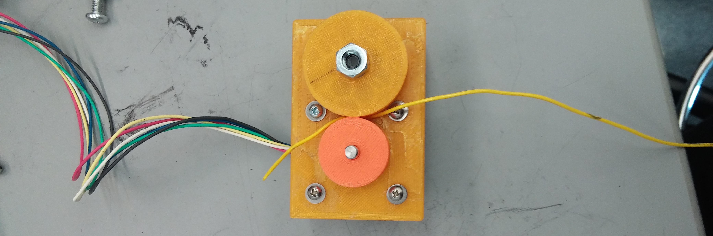
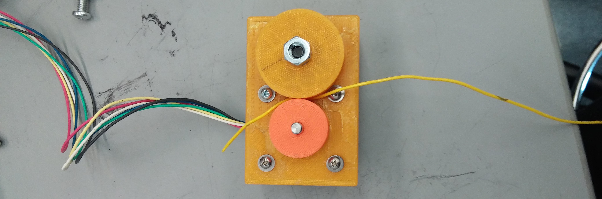

BendU
Integration
The integration of the system involves coordinating challenges between the mechnical, electrical, and software team. Our diagram below:

Sprint 1: 10/16/15
For the first sprint, we focused on getting working individual prototypes of each of the subsystems. For the mechanical side, we built a basic wire feeding and cutting mechanism. For the electrical side, we figured out how to control stepper motors and implemented basic control using a potentiometer and LCD screen.
 


By the end of the sprint, we had a few seperately working devices, with a low level of integration.
Integration Lessons from the Sprint
We tried to integrate the system after developing the individual components. There were difficulties in getting the system to work correctly together. We will spend more time in the future with an emphasis on designing for integration and starting integration earlier in the process in order to minimize difficulties.
Sprint 2: 10/27/15
In this sprint, we had accomplished the first half of our MVP in getting a feeding system integrated and working. We integrated the electrical system to a feeding system and made it capable of feeding a predescribed amount of wire as given through the Arduino Serial Console.

Integration Lessons from the the Sprint
The main integration lessons from this sprint was that we had issues with the precision of how much is fed and how much slip occurs. This is likely due to system level imprecisions for either the stepper control and friction within the system.
Sprint 3: 11/10/15
For the third sprint, we focused on getting a full minimum viable product working. This was composed of a working wire feeding and bending mechanism working that interfaces with the console. We began preparing the electrical system for integration with the mechanical system via moving our electronics from a breadboard to a protoboard.
Integration Lessons from the the Sprint
We still had issues with precision of parts and friction within the system. Consequently, we are focusing on reducing these imprecisions.
Sprint 4: 12/1/15
For the fourth sprint, we worked primarily on refining the current structure into a more accurately performing and aesthetic design. We redesigned parts that were previously 3D-printed such as the bending mechanism mount and the bending mechanism itself to be composed of metal. Furthermore, in order to reduce friction within the system, we moved to creating a funnel for wire to feed through in lieu of previous brass guide tubes. We also designed a laser-cut MDF box to store electronic hardware for asthetic purposes.
Integration Lessons from the the Sprint
We found that 3D-printed material was not nearly strong enough for the bending mechanism. As a result, looking forward to future projects, we would plan with the awareness that PLA 3D-printed parts are non-ideal for surviving mechanical stresses.
Final CAD Diagrams: 12/1/15
Future Improvements
Some future improvements that could be made include bi-directional bending capability, extra axes for bending, and improving the ruggedness of the device. The bi-directional bending could be done via implementing a solenoid to control the height of the bending post. Extra axes could be implemented by allowing rotation of the bender to move in 3D space. Ruggedness could be improved by mounting hardware in a more fixed location within the box.